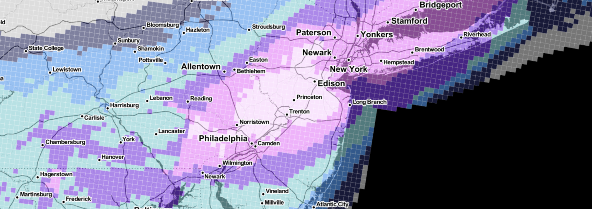

# Mapping!
#### Maps are a super way to convey information visually, but they are often overused. In the last unit in our class will deal with how to make maps, when to use them and the myriad of elements that go into a good one.
#### Miguel Paz created a better intro to mapping than I ever could, so we'll be using his slidedeck as our starting point for this week.
## <a href="https://docs.google.com/presentation/d/1f5iwsOEOk6EYk6E4UWRYU-Cm0dZl7peYMCdRtVzqZds/edit#slide=id.g11600f2fc8_1_76)">Miguel Paz's Guide to Maps</a>